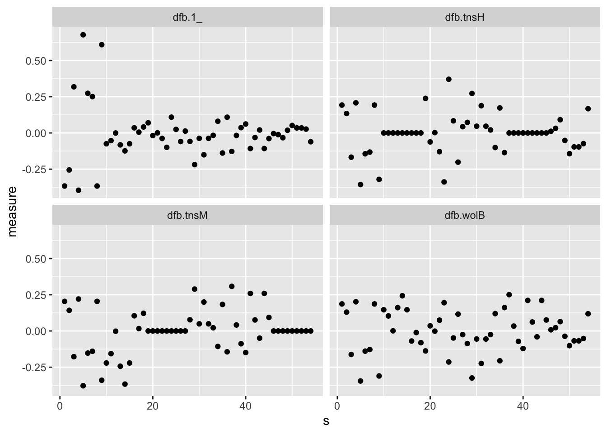

Chapter 8 Generalized Linear Models (Poisson)
8.1 Warpbreaks dataset
We want to analyse how the number of breaks in a wool thread depends on both the type of wool and the tension applied.
breaks: number of breaks (integer)wool: wool typetension: tension level (low, medium or high)
This dataset is already embedded in base R, thus we don’t need to read any external file and we can simply refer to it with its name.
head(warpbreaks)## breaks wool tension
## 1 26 A L
## 2 30 A L
## 3 54 A L
## 4 25 A L
## 5 70 A L
## 6 52 A Lsummary(warpbreaks)## breaks wool tension
## Min. :10.00 A:27 L:18
## 1st Qu.:18.25 B:27 M:18
## Median :26.00 H:18
## Mean :28.15
## 3rd Qu.:34.00
## Max. :70.008.2 EDA
This dataset is peculiar since we have two predictors, both qualitative. Some descriptive statistics might be useful.
Printing out the contingency table we observe that the dataset is balanced.
table(warpbreaks[, -1])## tension
## wool L M H
## A 9 9 9
## B 9 9 9Moreover, we can inspect the response variable distribution along each combination of the two qualitative variables.
library(dplyr)
warpbreaks %>%
group_by(wool, tension) %>%
summarise(mean = mean(breaks), var = var(breaks))## `summarise()` has grouped output by 'wool'. You can override using the
## `.groups` argument.## # A tibble: 6 × 4
## # Groups: wool [2]
## wool tension mean var
## <fct> <fct> <dbl> <dbl>
## 1 A L 44.6 328.
## 2 A M 24 75
## 3 A H 24.6 106.
## 4 B L 28.2 97.2
## 5 B M 28.8 88.9
## 6 B H 18.8 23.98.2.1 Plots
The above information can be easily visualized with
boxplots. Below we see a variation of the boxplot, called
violin plot, together with some fancy coloring which
highlights the nature of the tension variable (discrete
but with ordered levels, i.e. low, medium, high).
library(ggplot2)
warpbreaks %>%
ggplot() +
geom_violin(aes(tension, breaks, fill = as.integer(tension))) +
scale_fill_gradient(name = "tension", low = "#FFFAD7", high = "#E97777") +
facet_wrap(~wool) +
theme(legend.position = "none")
8.3 Poisson Family GLM
Let’s now fit a generalized linear model with log-link function (i.e. Poisson family).
breaks_glm <- glm(breaks ~ tension + wool,
data = warpbreaks,
family = "poisson"
)
summary(breaks_glm)##
## Call:
## glm(formula = breaks ~ tension + wool, family = "poisson", data = warpbreaks)
##
## Coefficients:
## Estimate Std. Error z value Pr(>|z|)
## (Intercept) 3.69196 0.04541 81.302 < 2e-16 ***
## tensionM -0.32132 0.06027 -5.332 9.73e-08 ***
## tensionH -0.51849 0.06396 -8.107 5.21e-16 ***
## woolB -0.20599 0.05157 -3.994 6.49e-05 ***
## ---
## Signif. codes: 0 '***' 0.001 '**' 0.01 '*' 0.05 '.' 0.1 ' ' 1
##
## (Dispersion parameter for poisson family taken to be 1)
##
## Null deviance: 297.37 on 53 degrees of freedom
## Residual deviance: 210.39 on 50 degrees of freedom
## AIC: 493.06
##
## Number of Fisher Scoring iterations: 4The output is similar to the one from the Binomial family seen in the previous lecture, although here all the coefficients are related to discrete variables.
8.3.1 Response
The link function is simply
\[ \eta_i = g(\mu_i) = \log(\mu_i) \]
therefore, it’s enough to exponentiate the logits to obtain the response.
breaks_glm$fitted.values## 1 2 3 4 5 6 7 8
## 40.12354 40.12354 40.12354 40.12354 40.12354 40.12354 40.12354 40.12354
## 9 10 11 12 13 14 15 16
## 40.12354 29.09722 29.09722 29.09722 29.09722 29.09722 29.09722 29.09722
## 17 18 19 20 21 22 23 24
## 29.09722 29.09722 23.89035 23.89035 23.89035 23.89035 23.89035 23.89035
## 25 26 27 28 29 30 31 32
## 23.89035 23.89035 23.89035 32.65424 32.65424 32.65424 32.65424 32.65424
## 33 34 35 36 37 38 39 40
## 32.65424 32.65424 32.65424 32.65424 23.68056 23.68056 23.68056 23.68056
## 41 42 43 44 45 46 47 48
## 23.68056 23.68056 23.68056 23.68056 23.68056 19.44298 19.44298 19.44298
## 49 50 51 52 53 54
## 19.44298 19.44298 19.44298 19.44298 19.44298 19.44298# equals to
exp(predict(breaks_glm, newdata = warpbreaks))## 1 2 3 4 5 6 7 8
## 40.12354 40.12354 40.12354 40.12354 40.12354 40.12354 40.12354 40.12354
## 9 10 11 12 13 14 15 16
## 40.12354 29.09722 29.09722 29.09722 29.09722 29.09722 29.09722 29.09722
## 17 18 19 20 21 22 23 24
## 29.09722 29.09722 23.89035 23.89035 23.89035 23.89035 23.89035 23.89035
## 25 26 27 28 29 30 31 32
## 23.89035 23.89035 23.89035 32.65424 32.65424 32.65424 32.65424 32.65424
## 33 34 35 36 37 38 39 40
## 32.65424 32.65424 32.65424 32.65424 23.68056 23.68056 23.68056 23.68056
## 41 42 43 44 45 46 47 48
## 23.68056 23.68056 23.68056 23.68056 23.68056 19.44298 19.44298 19.44298
## 49 50 51 52 53 54
## 19.44298 19.44298 19.44298 19.44298 19.44298 19.442988.3.2 Contrasts
We can use contrasts to compare the coefficients and understand whether two levels of a single variable report significantly different effects on the response variable. For instance, below we compare the medium tension level with the high tension level.
The reason why we use contrasts is that it provides
statistically relevant information on the difference between
two coefficients.
I.e. looking at the GLM summary, we observe that the difference
between M and H is 0.1971681,
but how do we know if it’s statistically relevant?
library(contrast)## Warning in .recacheSubclasses(def@className, def, env): undefined subclass
## "ndiMatrix" of class "replValueSp"; definition not updatedcont <- contrast(breaks_glm,
list(tension = "M", wool = "A"),
list(tension = "H", wool = "A"),
type = "individual"
)
# X = TRUE prints the design matrix used
print(cont, X = TRUE)## glm model parameter contrast
##
## Contrast S.E. Lower Upper t df Pr(>|t|)
## 0.1971681 0.06833267 0.05991786 0.3344183 2.89 50 0.0058
##
## Contrast coefficients:
## (Intercept) tensionM tensionH woolB
## 0 1 -1 0A low p-value lets us reject the hypothesis that the two coefficients are equal.
Note: the
X = TRUEparameter is actually a parameter of thecontrastobject, which tells the print function to show the contrast coefficients used.
Remember that the data is transformed into a model matrix
by the glm function and it can be retrieved as follows.
# extract the dummy variables dataset
x <- model.matrix(breaks_glm)
head(x)## (Intercept) tensionM tensionH woolB
## 1 1 0 0 0
## 2 1 0 0 0
## 3 1 0 0 0
## 4 1 0 0 0
## 5 1 0 0 0
## 6 1 0 0 0Let’s compute the contrast output values manually:
# constants interc, tensM, tensH, woolB
coeff <- breaks_glm$coefficients
v <- c(0, 1, -1, 0) # contrast coefficients
coeff %*% v # contrast (difference between coeffs)## [,1]
## [1,] 0.1971681# covariance matrix of the coefficients
covmatJ <- solve(t(x) %*% diag(breaks_glm$weights) %*% x)Weights are related to each combination of the (qualitative) predictors. E.g. every row with the same predictor values will have the same weight.
dif <- v %*% coeff
se <- sqrt(v %*% covmatJ %*% v)
se # standard error## [,1]
## [1,] 0.06833267tvalue <- dif / se
tvalue # t-statistic## [,1]
## [1,] 2.885414df <- nrow(x) - ncol(x)
df # degrees of freedom of the T-student variable## [1] 50The p-value is computed taking the two extremes (bilateral).
pt(tvalue, df, lower.tail = FALSE) + pt(-tvalue, df, lower.tail = TRUE)## [,1]
## [1,] 0.005755553We can provide multiple levels at once to contrasts:
cont_multi <- contrast(breaks_glm,
list(tension = "H", wool = levels(warpbreaks$wool)),
list(tension = "M", wool = levels(warpbreaks$wool)),
type = "individual"
)
print(cont_multi, X = TRUE)## glm model parameter contrast
##
## Contrast S.E. Lower Upper t df Pr(>|t|)
## -0.1971681 0.06833267 -0.3344183 -0.05991786 -2.89 50 0.0058
## -0.1971681 0.06833267 -0.3344183 -0.05991786 -2.89 50 0.0058
##
## Contrast coefficients:
## (Intercept) tensionM tensionH woolB
## 0 -1 1 0
## 0 -1 1 08.4 Tests
Since we know that the difference of the deviances is Chi-squared distributed, we can perform some tests.
str(summary(breaks_glm)) # to view the attribute names## List of 17
## $ call : language glm(formula = breaks ~ tension + wool, family = "poisson", data = warpbreaks)
## $ terms :Classes 'terms', 'formula' language breaks ~ tension + wool
## .. ..- attr(*, "variables")= language list(breaks, tension, wool)
## .. ..- attr(*, "factors")= int [1:3, 1:2] 0 1 0 0 0 1
## .. .. ..- attr(*, "dimnames")=List of 2
## .. .. .. ..$ : chr [1:3] "breaks" "tension" "wool"
## .. .. .. ..$ : chr [1:2] "tension" "wool"
## .. ..- attr(*, "term.labels")= chr [1:2] "tension" "wool"
## .. ..- attr(*, "order")= int [1:2] 1 1
## .. ..- attr(*, "intercept")= int 1
## .. ..- attr(*, "response")= int 1
## .. ..- attr(*, ".Environment")=<environment: R_GlobalEnv>
## .. ..- attr(*, "predvars")= language list(breaks, tension, wool)
## .. ..- attr(*, "dataClasses")= Named chr [1:3] "numeric" "factor" "factor"
## .. .. ..- attr(*, "names")= chr [1:3] "breaks" "tension" "wool"
## $ family :List of 13
## ..$ family : chr "poisson"
## ..$ link : chr "log"
## ..$ linkfun :function (mu)
## ..$ linkinv :function (eta)
## ..$ variance :function (mu)
## ..$ dev.resids:function (y, mu, wt)
## ..$ aic :function (y, n, mu, wt, dev)
## ..$ mu.eta :function (eta)
## ..$ initialize: expression({ if (any(y < 0)) stop("negative values not allowed for the 'Poisson' family") n <- rep.int(1, nobs| __truncated__
## ..$ validmu :function (mu)
## ..$ valideta :function (eta)
## ..$ simulate :function (object, nsim)
## ..$ dispersion: num 1
## ..- attr(*, "class")= chr "family"
## $ deviance : num 210
## $ aic : num 493
## $ contrasts :List of 2
## ..$ tension: chr "contr.treatment"
## ..$ wool : chr "contr.treatment"
## $ df.residual : int 50
## $ null.deviance : num 297
## $ df.null : int 53
## $ iter : int 4
## $ deviance.resid: Named num [1:54] -2.38 -1.67 2.08 -2.57 4.26 ...
## ..- attr(*, "names")= chr [1:54] "1" "2" "3" "4" ...
## $ coefficients : num [1:4, 1:4] 3.692 -0.3213 -0.5185 -0.206 0.0454 ...
## ..- attr(*, "dimnames")=List of 2
## .. ..$ : chr [1:4] "(Intercept)" "tensionM" "tensionH" "woolB"
## .. ..$ : chr [1:4] "Estimate" "Std. Error" "z value" "Pr(>|z|)"
## $ aliased : Named logi [1:4] FALSE FALSE FALSE FALSE
## ..- attr(*, "names")= chr [1:4] "(Intercept)" "tensionM" "tensionH" "woolB"
## $ dispersion : num 1
## $ df : int [1:3] 4 50 4
## $ cov.unscaled : num [1:4, 1:4] 0.00206 -0.00153 -0.00153 -0.00119 -0.00153 ...
## ..- attr(*, "dimnames")=List of 2
## .. ..$ : chr [1:4] "(Intercept)" "tensionM" "tensionH" "woolB"
## .. ..$ : chr [1:4] "(Intercept)" "tensionM" "tensionH" "woolB"
## $ cov.scaled : num [1:4, 1:4] 0.00206 -0.00153 -0.00153 -0.00119 -0.00153 ...
## ..- attr(*, "dimnames")=List of 2
## .. ..$ : chr [1:4] "(Intercept)" "tensionM" "tensionH" "woolB"
## .. ..$ : chr [1:4] "(Intercept)" "tensionM" "tensionH" "woolB"
## - attr(*, "class")= chr "summary.glm"d0 <- summary(breaks_glm)$null.deviance # Msat - Mnull
df0 <- summary(breaks_glm)$df.null
d1 <- summary(breaks_glm)$deviance # Msat - Mfit
df1 <- summary(breaks_glm)$df.residualdeltaD <- d0 - d1 # chisq statistic of the model (Mfit - Mnull)
dfD <- df0 - df1 # chisq degrees of freedom
pchisq(deltaD, dfD, lower.tail = FALSE)## [1] 9.750414e-19Since the p-value is very low, we can reject the hypothesis that the fitted model is equal to a null model, thus the model is useful.
Is it as good as the saturated one? No (of course, it’s not a perfect model).
pchisq(d1, df1, lower.tail = FALSE)## [1] 1.44606e-21Graphic representation:
tibble(
x = seq(0, 220, length.out = 100),
y = dchisq(x, df1)
) %>%
ggplot() +
geom_line(aes(x, y)) +
geom_vline(aes(xintercept = d1), color = "red")The plot tells us how far is the fitted model from being equal to the saturated one. It would be more useful though to observe the distance between the fitted and the null models.
Exercise: plot the same graph for the deviance between the fit and the null model. Comment it.
8.5 Influence measures
For each data-point in the dataset, we can measure how that
observation impacts the fit. The influence.measures function
fits a new model with all observations but one, then compares the
coefficients (in a sort of sensitivity analysis), and does this for
every observation. The bigger is the difference in the coefficients,
the higher is the influence of that datum.
Note that the results depend from the parametrization of the model,
(e.g. it changes when the reference level for tension is M or H).
infmeas <- influence.measures(breaks_glm)
str(infmeas)## List of 3
## $ infmat: num [1:54, 1:8] -0.366 -0.255 0.318 -0.395 0.678 ...
## ..- attr(*, "dimnames")=List of 2
## .. ..$ : chr [1:54] "1" "2" "3" "4" ...
## .. ..$ : chr [1:8] "dfb.1_" "dfb.tnsM" "dfb.tnsH" "dfb.wolB" ...
## $ is.inf: logi [1:54, 1:8] FALSE FALSE FALSE FALSE FALSE FALSE ...
## ..- attr(*, "dimnames")=List of 2
## .. ..$ : chr [1:54] "1" "2" "3" "4" ...
## .. ..$ : chr [1:8] "dfb.1_" "dfb.tnsM" "dfb.tnsH" "dfb.wolB" ...
## $ call : language glm(formula = breaks ~ tension + wool, family = "poisson", data = warpbreaks)
## - attr(*, "class")= chr "infl"infmeasmat <- infmeas$infmat
head(infmeasmat)## dfb.1_ dfb.tnsM dfb.tnsH dfb.wolB dffit cov.r cook.d
## 1 -0.3663095 0.2043507 0.1925495 0.1866539 -0.3663095 1.0486985 0.12222528
## 2 -0.2551478 0.1423376 0.1341177 0.1300112 -0.2551478 1.1148176 0.06279697
## 3 0.3183334 -0.1775866 -0.1673310 -0.1622075 0.3183334 1.0795065 0.11798629
## 4 -0.3953939 0.2205759 0.2078377 0.2014739 -0.3953939 1.0285388 0.14014604
## 5 0.6776242 -0.3780219 -0.3561912 -0.3452850 0.6776242 0.7959885 0.54693078
## 6 0.2735269 -0.1525907 -0.1437786 -0.1393763 0.2735269 1.1052090 0.08642675
## hat
## 1 0.08274043
## 2 0.08274043
## 3 0.08274043
## 4 0.08274043
## 5 0.08274043
## 6 0.08274043We can plot the observations influences:
summary(infmeas)## Potentially influential observations of
## glm(formula = breaks ~ tension + wool, family = "poisson", data = warpbreaks) :
## NONE## numeric(0)s <- list(s = 1:nrow(warpbreaks))
# we plot col 1, 2, 3 of influence measures
library(reshape2)
bind_cols(infmeasmat, s, warpbreaks) %>%
reshape2::melt(
measure.vars = 1:4,
variable.name = "infl_name",
value.name = "measure"
) %>%
ggplot() +
geom_point(aes(s, measure)) +
facet_wrap(~infl_name)
8.6 Interaction
Let’s add interaction.
# some other equivalent ways of writing breaks ~ tension*wool...
int_glm <- glm(breaks ~ tension + wool + tension:wool,
data = warpbreaks, family = "poisson"
)
head(model.matrix(int_glm))## (Intercept) tensionM tensionH woolB tensionM:woolB tensionH:woolB
## 1 1 0 0 0 0 0
## 2 1 0 0 0 0 0
## 3 1 0 0 0 0 0
## 4 1 0 0 0 0 0
## 5 1 0 0 0 0 0
## 6 1 0 0 0 0 0# as you can see from the design.matrix, it's the same model
int_glm2 <- glm(breaks ~ (tension + wool)^2,
data = warpbreaks, family = "poisson"
)
head(model.matrix(int_glm2))## (Intercept) tensionM tensionH woolB tensionM:woolB tensionH:woolB
## 1 1 0 0 0 0 0
## 2 1 0 0 0 0 0
## 3 1 0 0 0 0 0
## 4 1 0 0 0 0 0
## 5 1 0 0 0 0 0
## 6 1 0 0 0 0 0summary(int_glm)##
## Call:
## glm(formula = breaks ~ tension + wool + tension:wool, family = "poisson",
## data = warpbreaks)
##
## Coefficients:
## Estimate Std. Error z value Pr(>|z|)
## (Intercept) 3.79674 0.04994 76.030 < 2e-16 ***
## tensionM -0.61868 0.08440 -7.330 2.30e-13 ***
## tensionH -0.59580 0.08378 -7.112 1.15e-12 ***
## woolB -0.45663 0.08019 -5.694 1.24e-08 ***
## tensionM:woolB 0.63818 0.12215 5.224 1.75e-07 ***
## tensionH:woolB 0.18836 0.12990 1.450 0.147
## ---
## Signif. codes: 0 '***' 0.001 '**' 0.01 '*' 0.05 '.' 0.1 ' ' 1
##
## (Dispersion parameter for poisson family taken to be 1)
##
## Null deviance: 297.37 on 53 degrees of freedom
## Residual deviance: 182.31 on 48 degrees of freedom
## AIC: 468.97
##
## Number of Fisher Scoring iterations: 4Exercise: draw an interaction plot and check if the data relate to an additive model or not. On the x-axis put the tension levels, on the y-axis the breaks. Draw two lines, one for wool A and one for wool B, passing through the mean number of breaks. How do you interpret the graph?
8.6.1 Testing interaction
Is a more complex model worth the additional parameters?
AIC(breaks_glm, int_glm)## df AIC
## breaks_glm 4 493.0560
## int_glm 6 468.9692Yes, it is. And, again, we can test it against the null model.
d2 <- int_glm$deviance
df2 <- int_glm$df.residualanova(breaks_glm, int_glm, test = "Chisq")## Analysis of Deviance Table
##
## Model 1: breaks ~ tension + wool
## Model 2: breaks ~ tension + wool + tension:wool
## Resid. Df Resid. Dev Df Deviance Pr(>Chi)
## 1 50 210.39
## 2 48 182.31 2 28.087 7.962e-07 ***
## ---
## Signif. codes: 0 '***' 0.001 '**' 0.01 '*' 0.05 '.' 0.1 ' ' 1pchisq(d1 - d2, df1 - df2, lower.tail = FALSE) # Mfit - Mnull## [1] 7.962292e-07